2024.6
MoodBin is a gesture-recognition based interactive art installation designed
as an emotional antidote for long-time city dwellers and busy daily commuters.
In the steel forests of modern cities, our minds are often overwhelmed by the
hustle and bustle, longing for a peaceful harbor and a touch of natural
soothing. MoodBin uses drawers as a space to hold personal emotions — pulling
one open triggers two projectors that simulate natural scenes through gesture
interaction, inviting users to temporarily set aside the pressures of life
and settle into a moment of inner reflection.
My role: Ideation, Research, and Interactive Projection. I led
background research and implemented the hand-projection interaction using
gesture tracking through TouchDesigner.
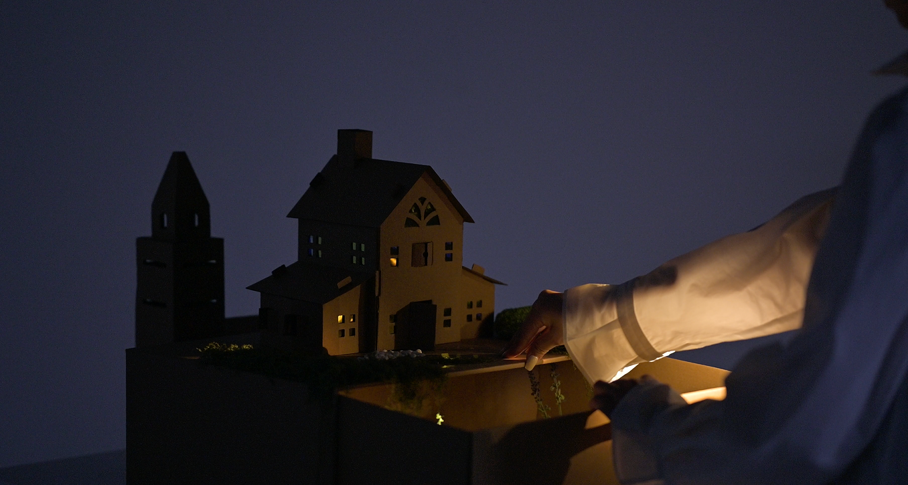


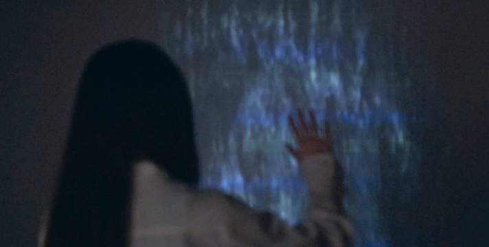
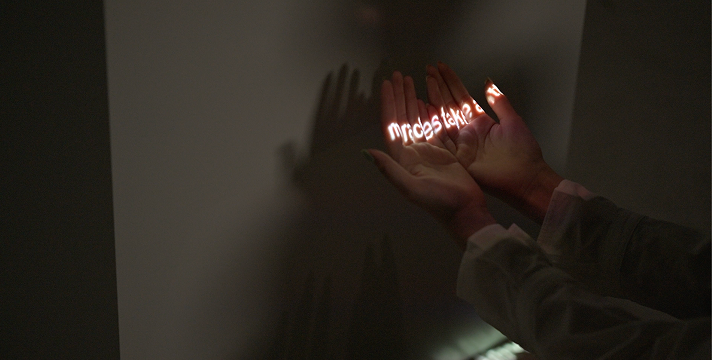
The installation is built around three core interactions, all driven by
TouchDesigner's gesture recognition and hand-tracking:
- Particle waterfall: when a hand moves through the projected
water, the flow disturbs around it; when the hand stays still, the water
bypasses it.
- Text tracking projection: projected text follows hand
position, and a closed fist triggers a change in the text content.
- Hand-projection interaction: the camera detects movement to
control changes in the projected content, letting the hand itself become
part of the canvas.
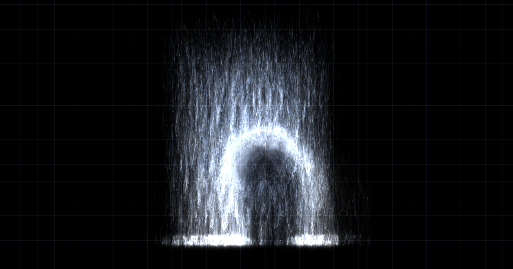
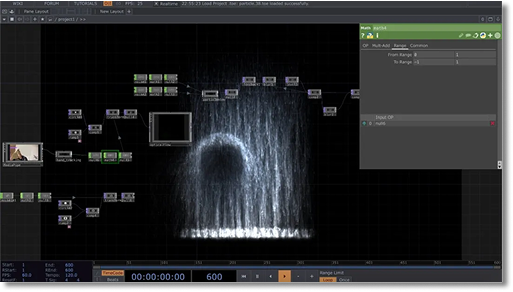
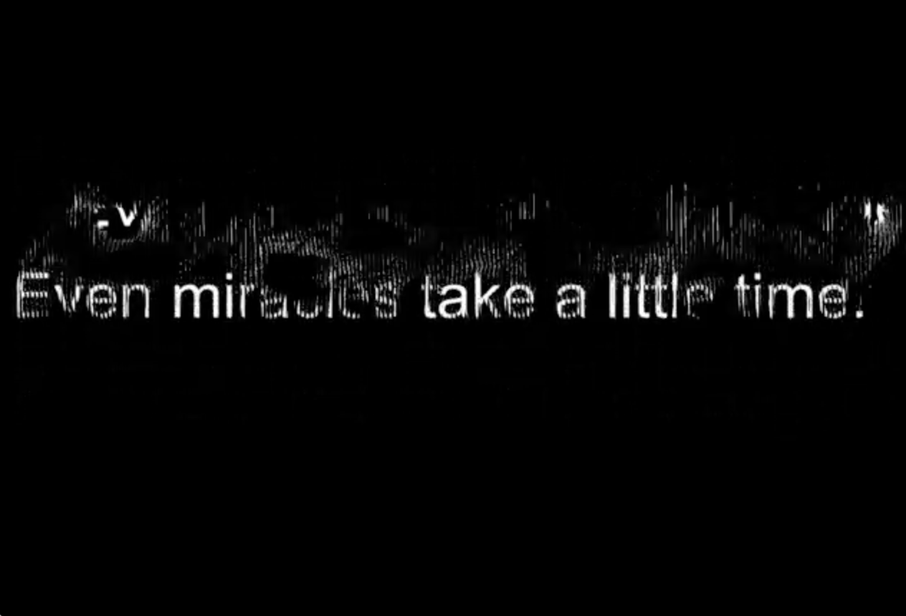
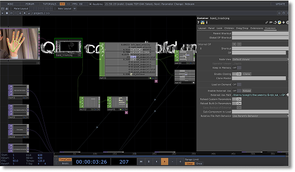
The main structure of the installation is made from recycled cardboard, with natural fragments collected and arranged by hand for decoration — a quiet reorganization of nature's own texture.
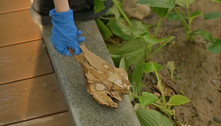
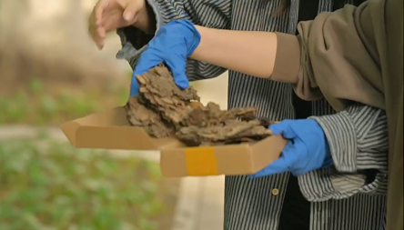
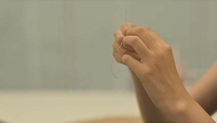
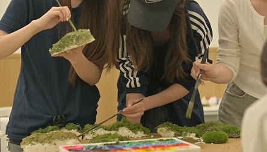
We hope MoodBin is not just an interactive installation, but a dialogue
between the soul and nature. Through subtle gestures, soft whispers, and the
graceful movement of particles, it unveils a peaceful realm where nature and
the self intertwine — guiding you back to a long-lost inner calm.
Medium: TouchDesigner, projection, gesture tracking, recycled cardboard
Keywords: interactive installation, gesture recognition, emotional design,
projection mapping, nature & urban life
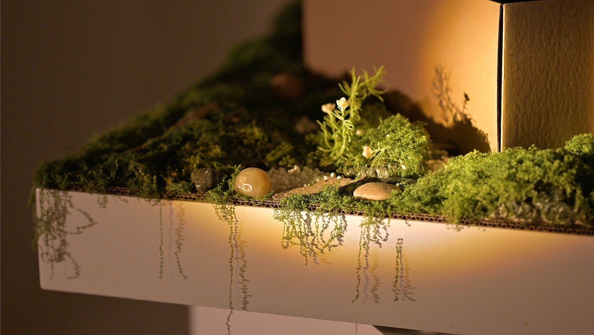